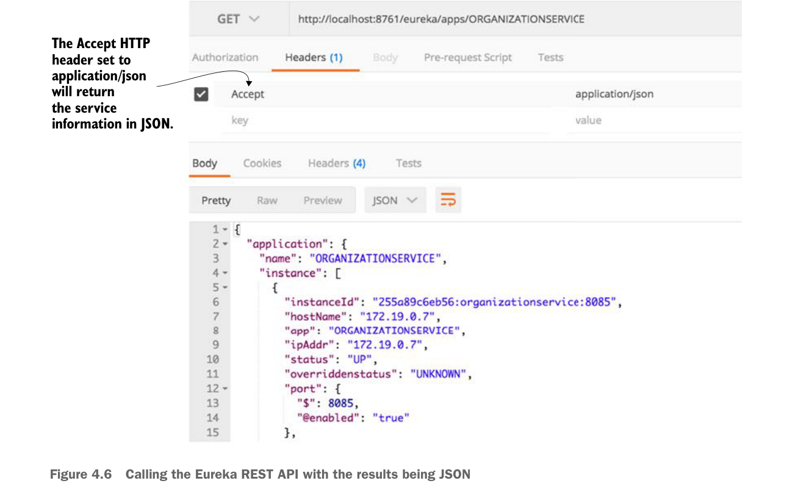

The default format returned by the Eureka service is XML. Eureka can also return the data in figure 4.5 as a JSON payload, but you have to set the Accept HTTP header to be application/json. An example of the JSON payload is shown in figure 4.6.

The Accept HTTP header set to application/json will return the service information in JSON.
Calling the Eureka REST API with the results being JSON